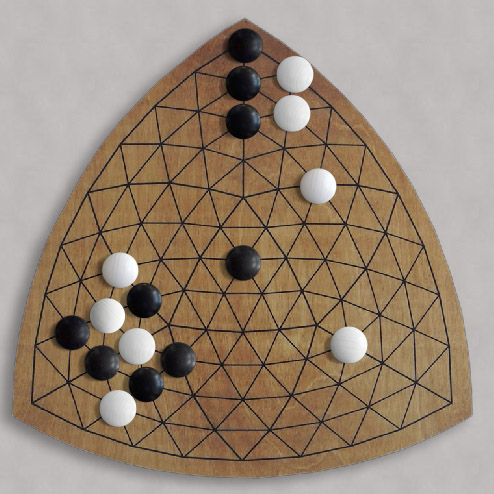

|
|
|
| About the gameboard:
The curved triangular playing board has 93 nodes (points of
intersection) on which the black and white stones are played. There are
24 nodes along its 3 outside edges and 69 interior nodes. Each board
side contains 9 nodes. Three of the interior nodes are pentads (connected to 5 other nodes); the other 66 are hexads (connected to 6 other nodes). Each corner node "belongs" to both of its two adjacent sides. Start: One player uses the black stones; the other uses the white. Board empty. Play: The players take turns placing one of their stones on any unoccupied node. Black plays first. Stones stay put for the duration of the game. Goal: Each player tries to form a "Y" — a continuous string of stones of their own color that reaches all three outside edges of the board, thus connecting all three sides together. You can think of this string as a "string of beads" where the thread between the beads is made up of lines on the board. This string can look a bit like a "Y" but could look quite different. For example, Instead of three branches, it could even be a single string from a corner to the opposite side. Whoever first forms a Y wins. Fact: In every game, no matter how well or how inexpertly played, one of the two players will eventually make a Y. Only one player will make a Y — there will never be a "draw." The Pie Rule: On the second player's first move, they have the choice to continue play normally, or to swap colors, effectively taking over the first player's position. This forces the first player to choose an opening move that is not obviously to either player's advantage. |  |
| E-Mail: | Go to BoardSpace.net home page |